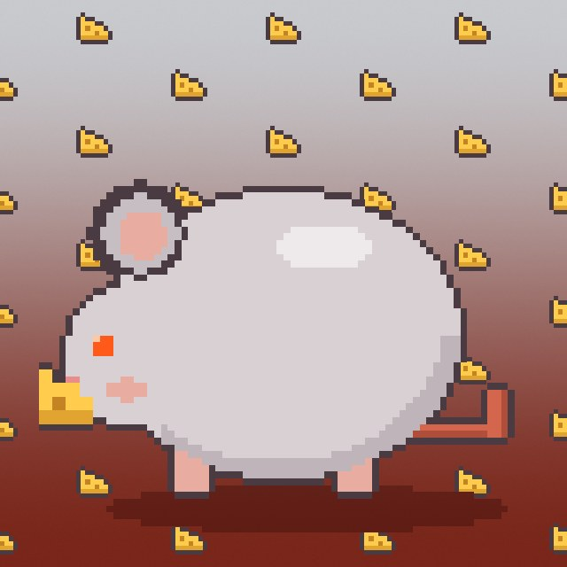
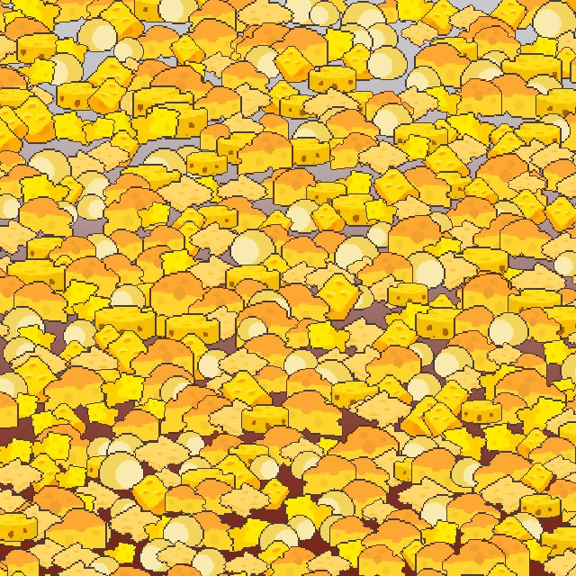
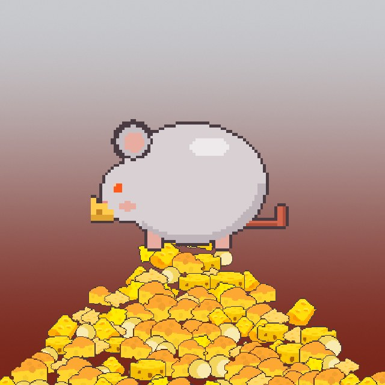
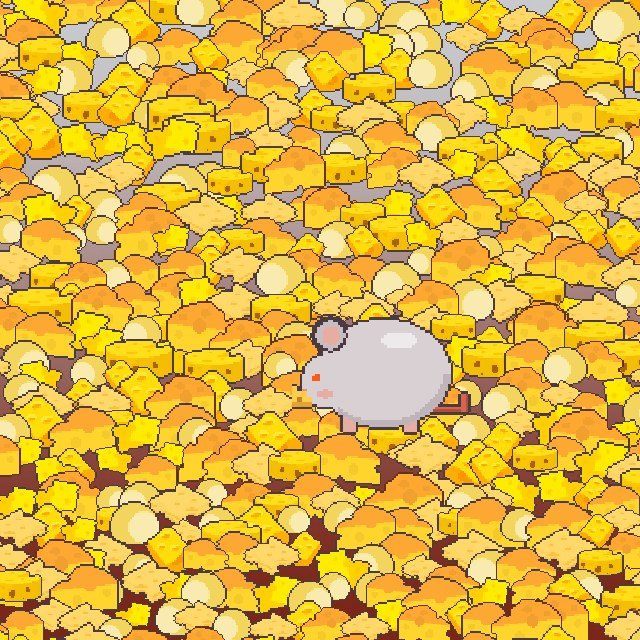
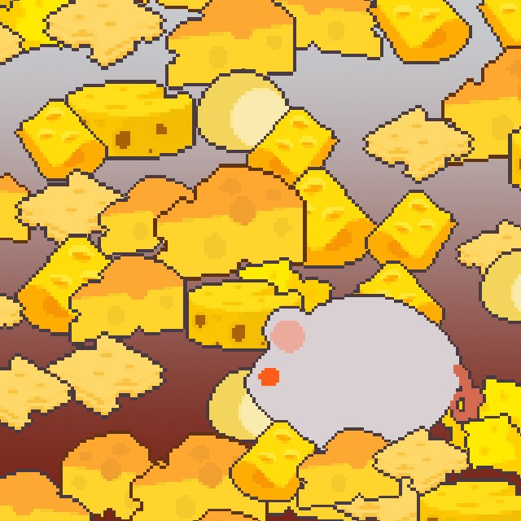

付録
実装：天秤の物理（sus dungeons）
実装
1目標角
重さの差を傾きに
差が大きいほど傾き、上限で頭打ち
2揺らぎ
乱数を使わない
二つの正弦で揺らす。同じ局面は毎回同じ動き
3運動方程式
ばね + 減衰
減衰は臨界より弱く、少し揺れてから止まる
5成立
この瞬間の傾きだけ
自分の皿が下がっていれば支払い完了
ショップ画面を作らず、天秤で払う。毎フレーム、運動方程式を解いて皿を動かす。
セツ シュントウ 付録A1
付録
数字で見る規模
規模
sus dungeons / rec.ooo のコミット
765件
2026-08-09 から（git rev-list）
ゲームを作る作業台
41個
NPC表・敵人表・掉落表 など
| 対象 | 数 | 中身 | 測り方 |
|---|
| 作業台の HTML / JS | 16,331 行 | desks/ の分 | wc -l |
| 音楽ストア | 3,003 行 | 再生・購入・メールでの復元 | wc -l |
| デスクトップの相棒 sus | 8,136 行 | Swift 48 ファイル・378 コミット | wc -l / rev-list |
| 作品集 p.rec.ooo | 90 件 | コミット（2026-04 から） | rev-list |
| デザイン規約 | 21 個 | 部品ごとの決まり 3,308 行 | design-modules |
| 作業の手順書 | 41 本 | 作業の種類ごとに一本 | 見出しを数えた |
sus dungeons / rec.ooo の月ごとのコミット
8 月9 月10 月11 月*
* 11 月は 6 日まで。数はすべて 2026-11-06 に測った値
10 月は 1 か月で 450 コミット。ゲーム・作業台・音楽ストアを一人で並行して進めている。
セツ シュントウ 付録A2
付録
作業の決まりと自動検査
仕組み
作業の前規約
何を
共通の規約（デザイン・文章・記録の書き方）を、作業を始めるたびに自動で読み込む。
どう引くか
依頼の文から、41 本の手順書のうち該当する一本を引いてから着手する。
部品の決まり
デザイン規約 21 個。色は :root だけ、説明用の hovertip は付けない など。
作業の中自動検査
画面
19 項目を数える：枠線・角丸・影・アニメーション・4px を超える余白・文字サイズの種類 など。
文章
字数の上限、中身のない言い回し、鉤括弧の中が出典と一致するか。通らなければコミットが止まる。
句読点
文書を書くたびに句読点を検査して返す。
作業の後記録
記録の義務
ファイルを変えたのに記録がなければ、作業の終了を一度止める。
残すもの
依頼の原文・判断・結果。知識庫は 3,948 章。次の作業の前提になる。
知らせ
終わったら、デスクトップの相棒 sus が一言で知らせ、成果物を持ってくる。
$ python3 rec-rec/tests/前端體檢.py p-rec/product/index.html # 見出しは日本語に置き換えて表示
| 頁 | 枠線 | 角丸 | 影 | アニメ | 余白>4 | 入れ子枠 | 保険 | hover数 | 文字ボタン | 色付き底 | 文字サイズ | 文字色 | 下部バー | 閉じる× | h1 | icon | confirm |
| product/index.html | · | · | · | · | · | · | · | 7 | · | 10 | 2 | · | · | · | · | · | · |
$ python3 p-rec/tools/check_pd.py
✓ product band ✓ product su ✓ product dungeons ✓ band-no-account ✓ band-room ✓ dungeons-livehouse ✓ page
決まりは作業の前に読ませ、守れたかは機械で数える。
セツ シュントウ 付録A3
付録
比較案：ゲームの扉
比較 → 採用
A の黄銅を、絵のなかった黄色の扉に先に当てた。
セツ シュントウ 付録A4
付録
比較案：曲のジャケット
比較 → 採用

元の絵

A 一面に敷く

B 山の上に巨大

C 探させる

D 大きく、右下に
D：手描きの絵を 5 色のドット絵に起こし、手前のチーズで少しだけ隠す。公開版ではチーズをマウスで押しのけられる。
セツ シュントウ 付録A5
付録
比較案：作品集のレイアウト
比較 → 採用
撮り方
案ごとに 5 事例を 1440 × 900 で
B：舞台を固定の大きさにし、事例を替えても右欄が動かない。その後、映像を枠の中央に寄せた。
セツ シュントウ 付録A6